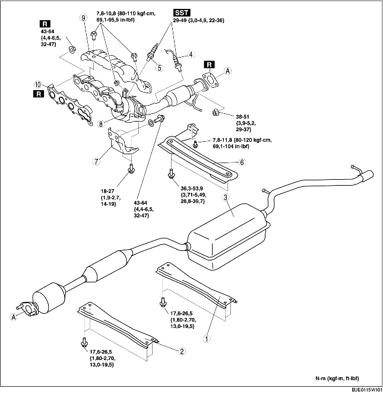

1. Déposer la plaque de trou de bougie. (voir la section DÉPOSE/REPOSE DE PLAQUE DE TROU DE BOUGIE [LF].)
2. Déposer le couvercle de batterie et le conduit de batterie. (voir la section DEPOSE/REPOSE DE BATTERIE [LF].)
3. Débrancher le cable négatif de la batterie.
4. Déposer le cache inférieur.
5. Déposer les différents composants selon l'ordre indiqué dans le tableau.
6. Pour la repose, suivre l'ordre inverse de la dépose.

.
|
1
|
Partie arrière de tunnel
|
|
2
|
Partie avant de tunnel
|
|
3
|
Silencieux principal
(voir la section Note sur la dépose de silencieux principal.)
|
|
4
|
Sonde d'oxygène des gaz d'échappement préchauffée arrière
|
|
5
|
Sonde d'oxygène des gaz d'échappement préchauffée arrière
|
|
6
|
Partie
|
|
7
|
Support de collecteur d'échappement
|
|
8
|
WU-TWC
(voir la section Note sur la dépose de collecteur d'échappement.)
(voir la section Note sur la repose de collecteur d'échappement.)
|
|
9
|
Isolateur de collecteur d'échappement
|
|
10
|
Joint de collecteur d'échappement
|
1. Desserrer le boulon de l'amortisseur inférieur et le boulon de fixation du composant de barre transversale, et abaisser le composant de barre transversale d'approx. 70 mm {2,8 in}. (voir la section DEPOSE/REPOSE DE BARRE TRANSVERSALE ARRIERE.)
1. Déposer les roues et les pneus.
2. Débrancher l'arbre de direction du côté boîtier et timonerie de direction. (voir la section DEPOSE/REPOSE DE BOITIER ET DE TIMONERIE DE DIRECTION.)
3. Déposer le caoutchouc de fixation de moteur N° 1. (voir la section DEPOSE/REPOSE DE MOTEUR [LF].)
4. Desserrer les boulons du collecteur d'échappement.
5. déposer le boulons de fixation du stabilisateur avant et du composant de barre transversale avant. (voir la section DEPOSE/REPOSE DE BARRE TRANSVERSALE AVANT.)
6. Desserrer les boulons du composant de barre transversale avant, et abaisser le composant de barre transversale avant d'approx. 100 mm {3,94 in}. (voir la section DEPOSE/REPOSE DE BARRE TRANSVERSALE AVANT.)
7. Soutenir le tuyau flexible à l'aide d'une enveloppe ou d'une éclisse de soutien, comme indiqué dans l'illustration.
8. Déposer le collecteur d'échappement en l'abaissant en-dessous du véhicule.
1. Serrer les écrous de fixation du collecteur d'échappement selon l'ordre indiqué dans l'illustration.